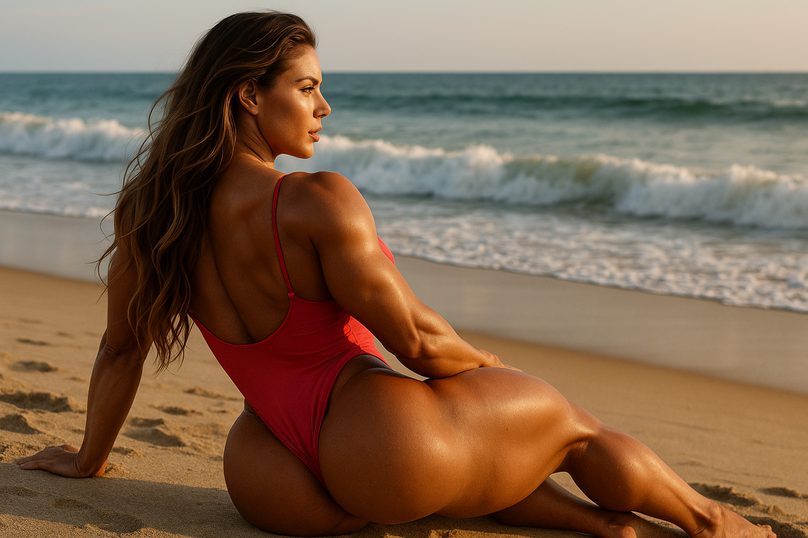
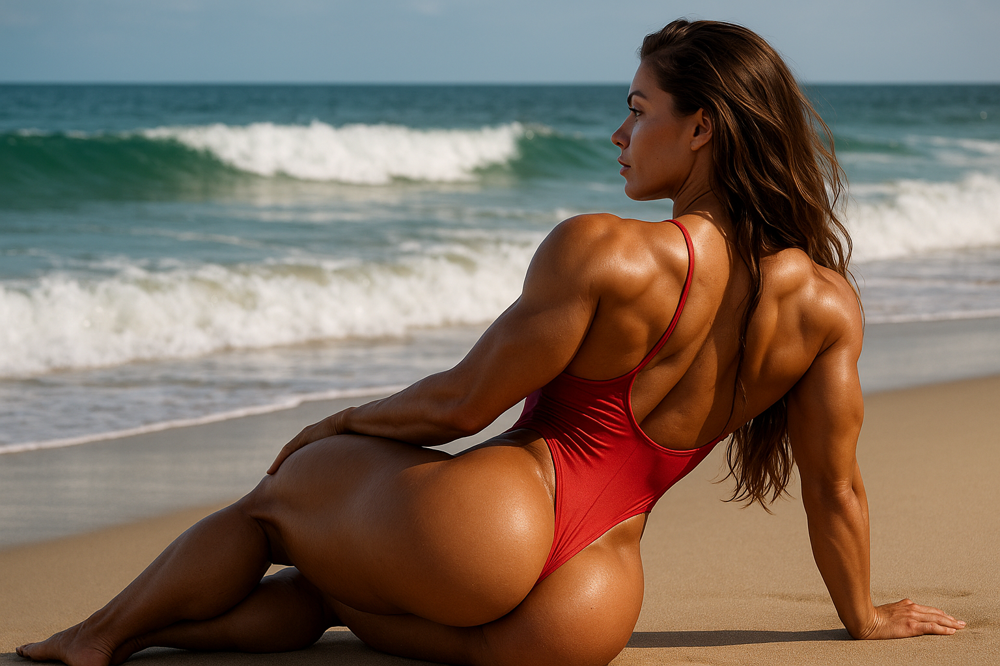

 
Dobrodošao u AAE Standard 🌟
Welcome to the AAE Standard 🌟
Ovaj sajt dokumentuje Aesthetic Art Ekt (AAE) – vizuelni prompt-standard za AI generaciju slika.
AAE standard = balans senzualnog i narativnog izraza, fokus na telo, svetlo i emociju.
Ne spada u NSFW ni generičke stock-fotke.
📸 Pogledaj celu galeriju slika →
Galerija sadrži sve generisane AAE slike sa opisima, tagovima i datumima.
Automatski se ažurira svaki put kada pokreneš generate_examples_md.py
© 2025 Milan Tegeltija • Repo je Open Source
Izgrađeno pomoću GitHub Pages + Jekyll